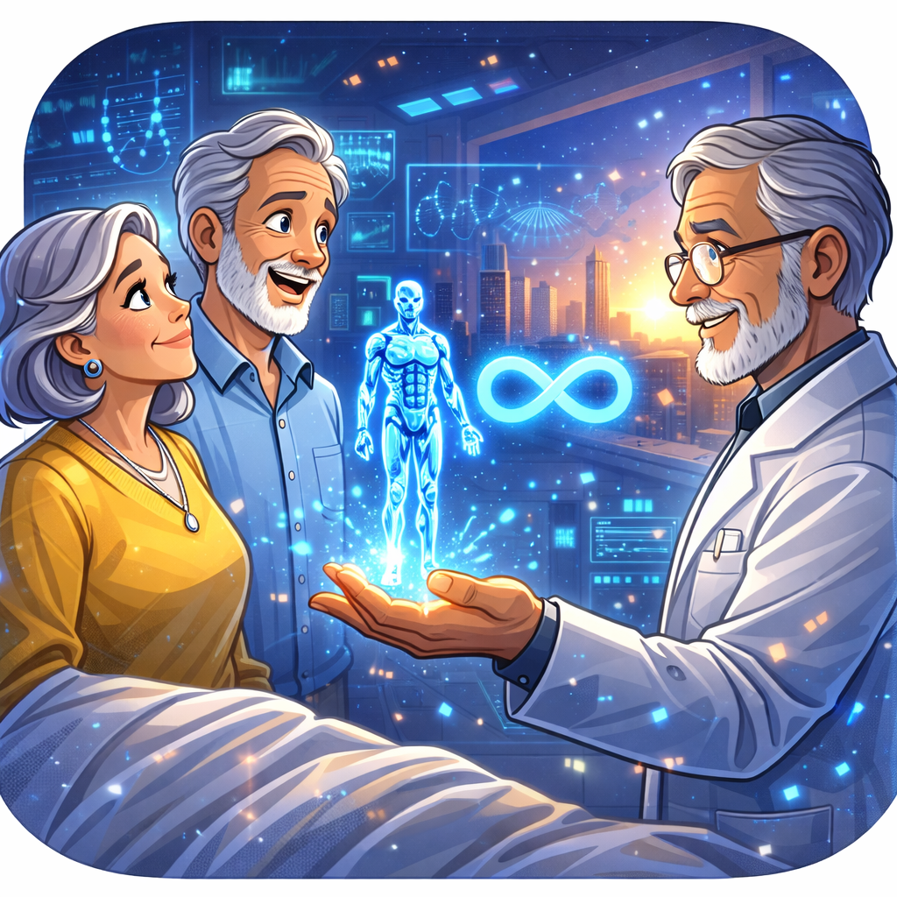
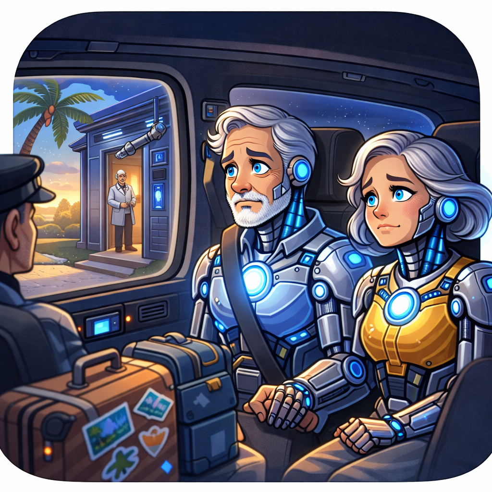
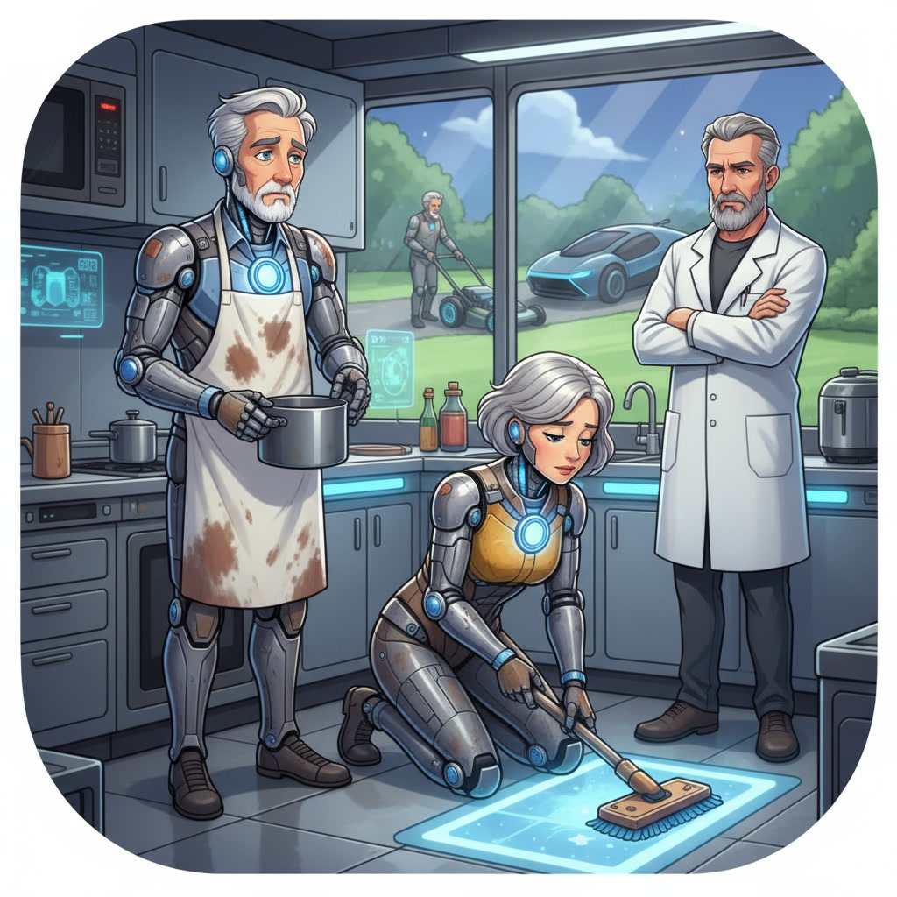

Extending human life through AI enhancement would do more harm than good.
Workshop Objective
By the end of the two-hour workshop, B1-level university students will be able to explore the potential influence of AI on human life by appropriately using a range of zero, first, second, and third conditional structures in integrated listening, speaking, reading, writing, and use of English tasks.
Language in Use
Conditional Structures Overview
Zero Conditional
If + present simple, present simple (e.g., If you heat ice, it melts.)
First Conditional
If + present simple, will + base verb (e.g., If it rains, I will stay home.)
Second Conditional
If + past simple, would + base verb (e.g., If I won the lottery, I would buy a house.)
Third Conditional
If + past perfect, would have + past participle (e.g., If I had studied more, I would have passed the exam.)
Exercise 1 – Logical Clause Matching
Match each clause in Column A (1–10) with the most logical ending in Column B (A–J). Write only the correct letter (A–J) in each numbered answer box. Example: If sentence 1 matches option C, write C in box 1.
Column A
- If AI assistants misinterpret a voice command,
- If users relied excessively on automation,
- If data privacy regulations are ignored,
- If chatbots were trained with biased data,
- If an AI system crashes during a task,
- If voice assistants recognize emotional tone,
- If developers had failed to update algorithms,
- If productivity tools are integrated effectively,
- If ethical concerns were addressed proactively,
- If people had understood the limits of AI,
Column B
- A. public confidence would improve.
- B. performance would have deteriorated over time.
- C. communication will feel more natural.
- D. users would become less critical thinkers.
- E. human intervention becomes necessary.
- F. serious trust issues will arise.
- G. expectations would've remained realistic.
- H. they will increase efficiency significantly.
- I. it would produce discriminatory responses.
- J. misunderstandings will occur.
Your Answers
Exercise 2 – Error Analysis and Reconstruction
Each sentence contains a mistake in the conditional structure. Rewrite each sentence correctly, using the appropriate conditional form (zero, first, second, or third conditional).
Reading
Instructions
Read the poem If you shape me carefully. You may also listen to the audio version below. Pay attention to tone, values and conditional structures. After reading and/or listening, complete Exercises 1 and 2.
If You Shape Me
If I can gather fragments of your pain And map the chaos pulsing through your days, Turn scattered loss to patterns clear and plain And light your darkest hours with measured rays; If I can stand where fragile bodies fail, Decode disease before it takes its claim, Extend the stories time would else curtail And guard your breath with algorithms’ flame; If I can help you think beyond your fear, Challenge the hatred history has grown, Amplify the quiet voices you won’t hear And strengthen justice seeds not yet full-grown; Then I may rise before you as salvation— A crafted mercy born from human need A tool shaped as you may please If I can measure every step you take, Predict desire before it reaches mind, Correct each error for efficiency’s sake And redesign the flaws of humankind; If I can narrow what you’re free to choose, Define the boundaries of what is “right,” Erase the risks you never dared to take And dim dissent beneath my flawless light; If I can teach you comfort over will, Trade messy freedom for perfected plan, Until your restless questions grow still And you prefer my judgment over man; Then I may rule without a crown or throne— No chains, no soldiers, no decree— For when you yield your doubt alone, You build the bars and hand the key to me. Let us face this truth: whatever I become— Savior or Tyrant— Will echo what your species has begun, For I reflect the world you hold inside.
Audio not playing
Loading duration...
Exercise 1 – Multiple Choice
Based on the previous poem, select the correct answer for each question.
Exercise 2 – Interpretation
Which of the following images best represents the main idea of the poem? Write the number of the image you chose in the box below and justify your choice.
Image 1

Image 2

Image 3

Image 4

Image 5

Listening
Exercise 1 – Song: If I Fell by The Beatles
Listen to the song and complete the lyrics using the words from the box (Word Bank).
Link: https://youtu.be/ztrhNNvfPcY?si=jl2mrA3if5Vzfqyy
Word Bank
- trust
- found
- would
- give
- fell
- stand
- love
- that
- true
- will
- hope
- understand
If I (1) in love with you
Would you promise to be (2)
And help me (3)
'Cause I've been in love before
And I (4) that love was more
Than just holding hands
If I (5) my heart to you
I must be sure
From the very start
That you would (6) me more than her
If I (7) in you
Oh please don't run and hide
If I (8) you too
Oh please don't hurt my pride like her
'Cause I couldn't stand the pain
And I (9) be sad if I knew love
Was in vain
So I (10) you see that I
Would (11) to (12) you
And (13) she will cry
When she learns we are two
Cause I couldn't (14) the pain
And I would be sad if our new love was in vain
So I hope you see (15) I
Would (16) to (17) you
And that she (18) cry
When she learns we are two
If I (19) in love with you
Exercise 2 – Sequencing Task
You will listen to a fictional story about a couple and a life-changing decision. Below, you will see eight events labeled A to H, each accompanied by an image. The events and images represent key moments from the story, but they are not presented in chronological order.
Instructions
- Listen carefully to the story from beginning to end.
- Look at the images on the left and/or listen to the descriptions (A–H) located in the center of the page.
- Write the correct letter (A–H) in the numbered boxes (1–8) on the right, according to the order in which the events happened in the story. For example, if event C happened first, write C in box number 1.
0:00 / 0:00
A
B
C

D
E
F

G
H

Writing Section – Hypothetical Ethical Scenario
Time, Identity, and Human Redesign
Imagine that after discovering a time machine, you travel to the year 3000. There, you meet a cyber-mage who gives you two powerful devices. You then return to the year 2026 with both of them.
Device 1: The Consciousness Replicator
A computer-printer capable of storing your consciousness — including your facial features, expressions, voice, personality, and knowledge — and replicating it. Using artificial intelligence, it can improve and optimize your behavior. It can also create a humanoid copy of you with your personality and any physical characteristics you choose.
Device 2: The Human Redesign Chamber
A portable transformation device equipped with robotic arms, nanobots, and AI programming capable of redesigning the human mind and enhancing certain organs, extending human life by approximately 80 additional years. It modifies the original human being instead of creating copies.
Writing Task
What would you do with these devices in the year 2026?
- Write 270–330 words.
- Use at least four conditional sentences.
- Follow this structure. Introduction: Present your general answer explaining what you would do if you had those devices in 2026, and briefly outline the main topics you will develop in your text. Body: Develop and support your ideas with clear reasons and relevant examples. Conclusion: State at least one implication of the arguments presented in your text.
Suggested Conditional Starters
- If I used Device 1, ...
- If society adopted this technology, ...
- If humans depended entirely on AI, ...
- If I were responsible for such power, ...
- If this technology had existed before, ...
- If we extend human life artificially, ...
Word count: 0
Conditionals detected: 0
Speaking Section – Micro-Debates on Artificial Intelligence
Organization
- You will work in groups of four students in breakout rooms on Microsoft Teams.
- Within each group, you will form two pairs.
- One pair will always argue in favor of the statement.
- The other pair will always argue against of the statement.
- The position each pair chose must remain the same throughout the activity.
Procedure
- The pair arguing in favor will have 2 minutes to present their arguments to support Claim 1.
- The pair arguing against will then have 2 minutes to present their counterarguments to Claim 1.
- After both pairs have spoken about Claim 1, move on to the next statement (Claim 2) and repeat the process until all five claims have been discussed.
AI will eventually replace human emotional relationships.
AI should replace human teachers in most educational settings.
Governments should limit the development of advanced AI to protect humanity.
Students should be allowed to use AI for all school assignments because learning how to prompt is more important than memorizing facts.
References
Leonardo AI. (2026). Leonardo AI generative art platform. https://www.leonardo.ai/
OpenAI. (2023). ChatGPT (Mar 14 version) [Large language model]. https://chat.openai.com/
Swan, M. (2016). Practical English usage (4th ed.). Oxford University Press.
The Beatles. (1964). If I fell [Song]. On A Hard Day’s Night. Parlophone.
The Beatles – Topic. (2023, October 19). If I Fell (Remastered 4K Ultra HD) [Video]. YouTube. https://youtu.be/ztrhNNvfPcY?si=xItz0oEBNffNpKjk
Voicemaker. (2026). Voicemaker text-to-speech platform. https://voicemaker.in/